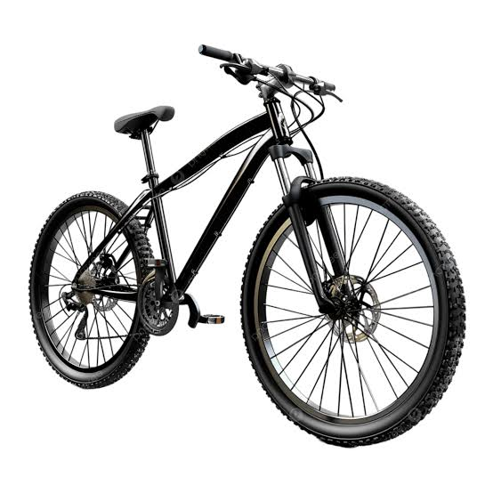
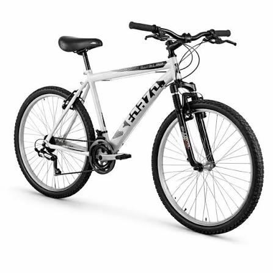
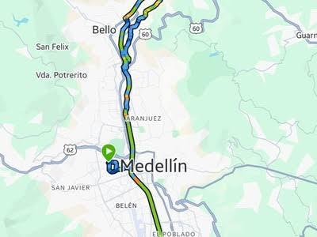
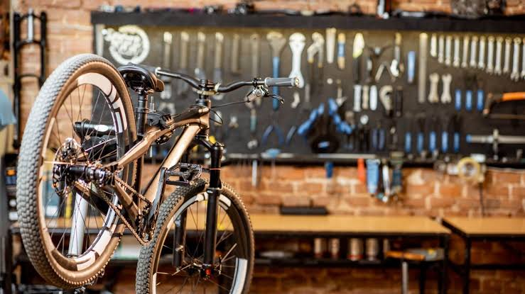

Alquiler de bicicletas

Bicicletas urbanas y de montaña por horas o por días. Todas las tarifas incluyen casco y candado.
Alquiler de bicicletas en Medellín. Pedalea la ciudad a tu ritmo.
Somos un emprendimiento paisa apasionado por la movilidad sostenible y el turismo sobre dos ruedas. Desde 2021 ayudamos a locales y visitantes a descubrir la ciudad de una forma diferente, limpia y divertida. Si quieres pasar a vernos, mira dónde encontrarnos.

Bicicletas urbanas y de montaña por horas o por días. Todas las tarifas incluyen casco y candado.

Sube las lomas de Medellín sin llegar agotado. Ideales para recorridos largos y para quienes apenas empiezan a pedalear en la ciudad.

Rutas turísticas y culturales por lugares representativos de Medellín, acompañados por guías locales. Salen los sábados y domingos a las 7:00 a. m.

Ajustes rápidos, inflado de llantas y reparación de pinchazos para que nunca te quedes varado en la ruta.
Estamos en El Poblado, Medellín.
Ver nuestra ubicación en Google Maps (abre en otra pestaña)
Escríbenos a hola@ruedalibre.example